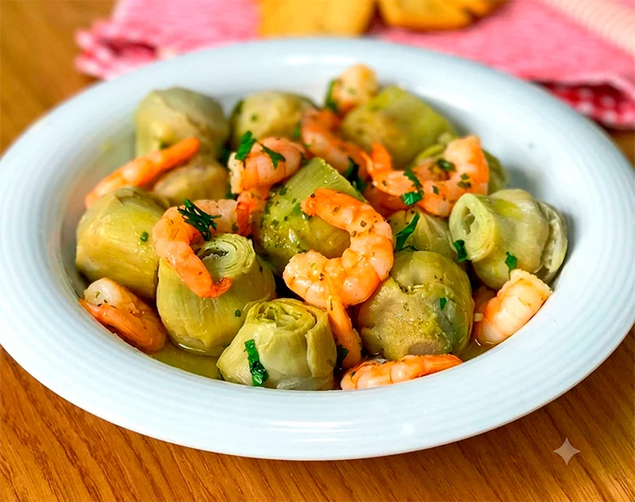

Receta saludable
Alcachofas con gambas
Un plato sencillo y muy mediterráneo, en el que las alcachofas se cocinan con un sofrito de ajo, cebolla, tomate y el sabor del marisco para conseguir una receta ligera pero con mucho gusto.
Ingredientes
- 250 g de gambas o langostinos
- 300 g de corazones de alcachofa
- 1 diente de ajo
- 1 cebolla pequeña
- 2 cucharadas de tomate frito
- 2 cucharadas de aceite de oliva virgen extra
- 1 pizca de estragón
- Sal
Preparación
- Pela las gambas o los langostinos y reserva la carne.
- Hierve las cabezas y las cáscaras en agua durante unos minutos y cuela el caldo.
- Cuece en ese caldo los corazones de alcachofa hasta que estén tiernos. Si usas alcachofas congeladas, cocínalas igualmente en el caldo para que cojan sabor.
- Pica finamente el ajo y la cebolla y sofríelos en una sartén con el aceite de oliva.
- Añade el tomate frito y una pizca de estragón, y cocina un par de minutos.
- Incorpora las alcachofas cocidas y las gambas peladas.
- Tapa la sartén y cocina 2 minutos más, lo justo para que las gambas se hagan y se integren los sabores.
- Sirve caliente.
Consejo práctico
Si no te apetece preparar el caldo con las cabezas y las cáscaras, puedes usar directamente alcachofas ya cocidas, pero el plato gana bastante si aprovechas ese fondo de marisco.